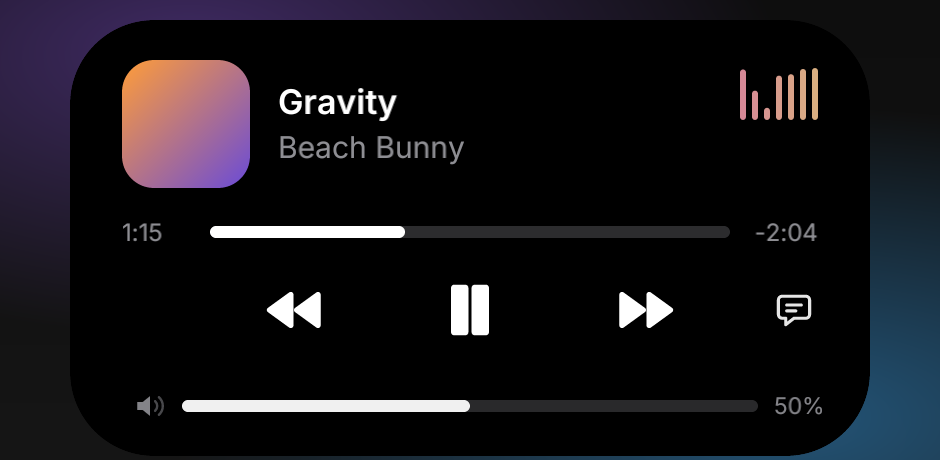
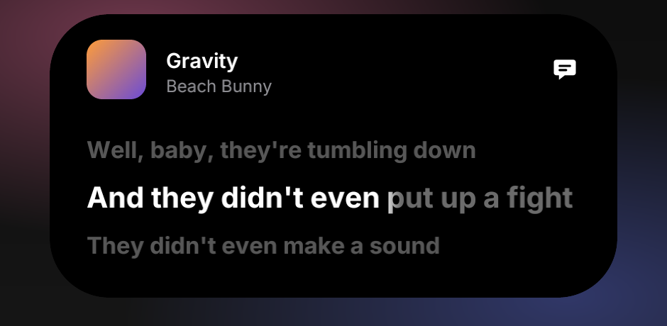
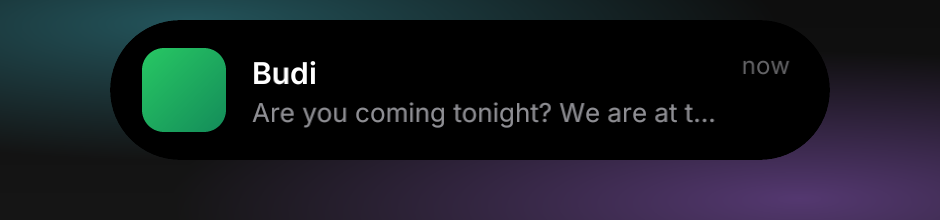
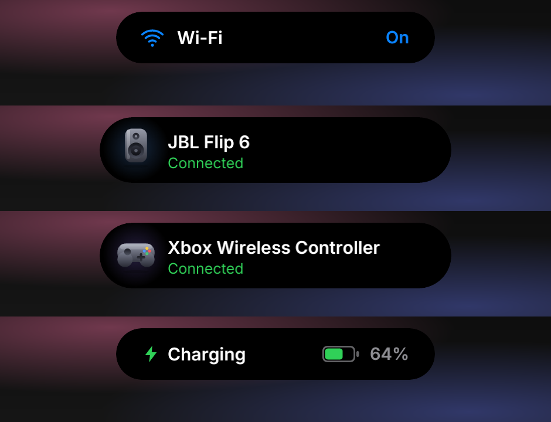

A dynamic island for your Windows desktop.
Bloop turns the top of your screen into a small, lively pill. Your music with synced lyrics, your notifications, Wi-Fi and Bluetooth changes, all in one place that moves like water.
Free · Windows 10 and 11, 64-bit · one small file, no installer


Small on the outside, a lot inside.
Bloop is written in Rust and draws everything itself, so it starts fast, stays light and does not need a browser engine.
Music, right there
A little pill with the cover and an equalizer while a song plays. Hover to open the player with progress, buttons and a volume slider. Works with the apps Windows shows in its media controls.
Synced lyrics
Lyrics from LRCLIB scroll with the song. Pick Smooth or Karaoke, where the words light up as they are sung.
Notifications that fit
Messages appear as a card, or as a small bubble beside the music pill. Click one to unfold it. Windows' own pop-ups stay hidden while Bloop is running.
Status pills
Wi-Fi, Bluetooth, airplane mode, hotspot, night light, energy saver, Do Not Disturb and battery each get their own pill and a soft sound. Connect a speaker, headphones or a controller and its picture floats in.
Knows what you are doing
With a maximized window it shrinks into a slim notch on the top edge. In full screen it tucks away, and peeks out when you move the mouse to the top.
Yours to tweak
A settings window with a live preview of the island, six colour themes, adjustable size and speed, and soft sound effects you can turn off. Changes wait for Save.
See it move.
These pictures are drawn by Bloop itself.




Up and running in a minute.
There is nothing to install. Bloop is a single file.
Download
Press Download for Windows and save
Bloop.exeanywhere you like, for example your Documents folder.Open it
Double-click the file. The island appears at the top of your screen and a Bloop icon appears in the tray, next to the clock.
Make it yours
Click the tray icon to open Settings. Turn on Start with Windows if you want it there every day.
Questions.
Short answers to the usual ones.
Which Windows does it need?
Windows 10 or 11, 64-bit. Notifications need Windows' permission to be read: the first time, Windows asks if Bloop may access your notifications. Say yes.
My notifications do not show while Do Not Disturb is on.
Windows itself holds them back, so Bloop never receives them. Add the apps you care about to the priority list in Windows (Settings, System, Notifications, Set priority notifications), or turn Do Not Disturb off. Bloop's own switch Respect Do Not Disturb (Settings, Notifications) decides whether what does arrive is shown or only listed.
Are the lyrics always right?
They come from the free LRCLIB database, matched by song title, artist and length. Most popular songs are there, some are not. If the words come a little early or late for a particular song, that is how that file was timed.
Does Bloop collect my data?
No accounts, no tracking, nothing is sent to a server of mine. Bloop makes two kinds of requests: it asks LRCLIB for the lyrics of the song you are playing (title, artist and length), and it asks GitHub whether a newer version exists. You can switch the update check off in Settings, Updates.
How do updates work?
Bloop looks at this page's GitHub releases a few seconds after start and then every six hours. When a newer version exists it downloads it and shows Restart now. You can also press Check now in Settings, Updates.
The Windows pop-ups disappeared. Is that a bug?
No. While Bloop runs it hides Windows' own notification banners so you do not see every message twice. When you quit Bloop from the tray, they come back. You can turn this off with Only show them in Bloop in Settings, Notifications.
How do I remove it?
Open Settings from the tray icon, press Quit Bloop (General), and delete Bloop.exe. If you turned on Start with Windows, switch it off first in Settings, General. Settings live in %APPDATA%\DynamicIsland and can be deleted too.
Give your screen a little bloop.
Free, small, and made with care. One file, no installer.